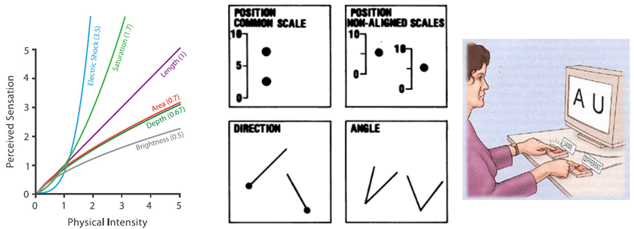
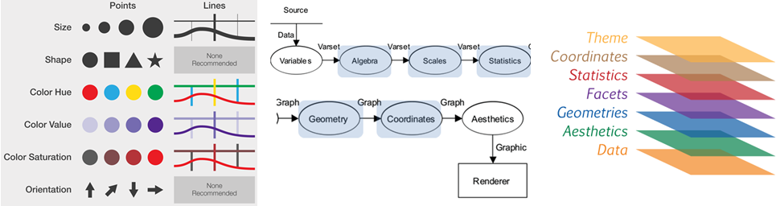
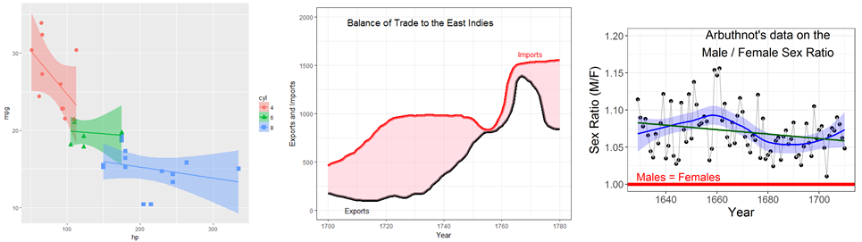
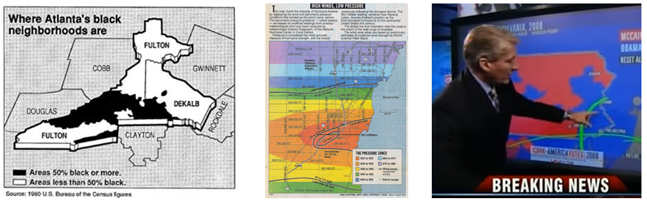

Psyc 6135: Psychology of Data Visualization
Michael Friendly
Winter, 2024
Course Description
Information visualization is the pictorial representation of data.
- Successful visualizations capitalize on our capacity to recognize and understand patterns presented in information displays.
- Conversely, they require that writers of scientific papers, software designers and other providers of visual displays understand what works and what does not work to convey their message.
This course will examine a variety of issues related to data visualization from a largely psychological perspective, but will also touch upon other related communities of research and practice related to this topic:
- history of data visualization,
- computer science and statistical software,
- visual design,
- human factors.
We will consider visualization methods for a wide range of types of data from the points of view of both the viewer and designer/producer of graphic displays.
 These web pages
reflect the course when it was last taught in 2022. Much will remain the
same, but details, readings and assignments are being reconsidered for
this year. If you find a link that doesn’t work, or could be replaced by
something better or more recent, please let me know by
filing an issue.
These web pages
reflect the course when it was last taught in 2022. Much will remain the
same, but details, readings and assignments are being reconsidered for
this year. If you find a link that doesn’t work, or could be replaced by
something better or more recent, please let me know by
filing an issue.

Overview & Introduction

Lecture notes
Assignment: Please prepare a 1-2 page summary of something(s) you found on the topics below for next week. Not for grading; I’ll ask a few of you to speak on this next class.
- Blogs: Explore one or two of the blogs or web resources listed in the lecture notes, Readings, or in Resources. Find a few examples of kinds of graphs you find interesting or worth exploring more.
- Good/bad graphs: Explore the literature in your area, say several issues of one journal. Find one example of a data display (graph or table) that communicates particularly well, and one example of a display that communicates badly.
Topics:
- Books, readings, blogs & web resources
- Goals of visualization; visualization as communication
- Roles of graphics in data analysis & presentation
- Effective data display
- Graphs: good/bad, excellent/evil
Readings:
Bold face items are considered essential.
- Gelman & Unwin Infovis and Statistical Graphics: Different Goals, Different Looks, JCGS 2013
- Howard Wainer (1984) How to Display Data Badly. American Statistician 38 137-147
- Jon Schwabish The Ten Most Misleading Charts During Donald Trump’s Presidency
- The data visualizations that helped us understand 2020
- Check out Additional resources for Session 1
Varieties of information visualization

Lecture notes: 1up PDF || 4up PDF
- Assignment:
- From the readings up to and including this week, find one example of a data graph that attempts to tell an interesting story of a useful topic. How well does it succeed? How could it be improved?
Topics:
- Data graphs: 1D – 3D
- Thematic maps
- Network and tree visualization
- Animation & interactive graphics
Readings:
- Amanda Makulec Pros and Cons of Chart Taxonomies. Are these chart taxonomies good or evil?
- Data Visuaization Catalog A handy compendium of most known graphical methods. There is also a Blog section with extended discussions of variations of a given chart type, e.g., this one on Boxplots.
- Friendly & RJ Andrews, The radiant diagrams of Florence Nightingale
- Turner Shaw 12 Data visualizations that illustrate poverty’s biggest challenges
- TED talks: Manuel Lima, A Visual History of Human Knowledge
- TED talks: Hans Rosling, The Best Stats …
- TED talks: Nicholas Christakis, How Social networks Predict Epidemics
- Check out Additional resources for Session 2
History of data visualization

Topics:
- Overview: The Milestones Project
- The first statistical graph
- The Big Bang: William Playfair
- Moral statistics: the birth of social science
- Graphs in the public interest: Nightingale, Farr and Snow
- The Golden Age
- Case study: Re-Visions of Minard
Readings:
- Friendly, M. A Brief History of Data Visualization
- Jeff Heer, A Brief History of Data Visualization, gives a lecture on his take on this history, interpreting and extending my work from a computer science perspective.
- Friendly, M. The Golden Age of Statistical Graphics. Statistical Science, 2008, 23, 502-535.
- Friendly etal. The First (Known) Statistical Graph: Michael Florent van Langren and the “Secret” of Longitude
- Friendly, M. & Denis, D. The early origins and development of the scatterplot
- Phan et al. Flow Map Layout, paper; see also: Web site
- Check out Additional resources for Session 3
Graphical Perception

Topics:
- Perception & Cognition
- Encoding, decoding
- Top-down vs. bottom-up processing
- Perceptual aspects
- Illusions
- Gestalt factors
- Accuracy of decoding
- Cognitive aspects
- Memory
- Color
Readings:
- Cleveland & McGill (1984) Graphical Perception… JASA A foundation paper on understanding aspects of graph perception.
- Christopher Healey Perception in Visualization A web page on this topic, including interactive demos, animations and lots of examples
- Kennedy Elliot 39 studies abpout human perception in 30 minutes
- Gordon & Finch (2015) “Statistician Heal Thyself: Have We Lost the Plot?”, JCGS, 1210-1229,
- Zeileis etal. (2009) Escaping RGBland: Selecting Colors for Statistical Graphics, Computational Statistics & Data Analysis, 53, 3259–3270.
- Zeileis et al. (2020) colorspace: A Toolbox for Manipulating and Assessing Colors and Palettes This is the latest, definitive work on designing color palettes for R. The associated web pages, http://colorspace.r-forge.r-project.org/index.html, have many vignettes and interactive color apps, also online, HCLwizard.
- Ware (2013), Information Visualization: Perception for Design, Chapter 4 (Color)
- Why Should Engineers and Scientists Be Worried About Color?
- Stephen Few Practical Rules for Using Color in Charts
- Thomas Lin Pedersen Scico and the Colour Conundrum
- Check out Additional resources for Session 4
Human factors research: How to tell what works

Topics:
- Human factors in graphic & information design
- Empirical study of graphs
- Experimental methods
- Accessibility of data visualization
- Graphical inference
Readings
- Franconeri etal (2021), The Science of Visual Data Communication: What Works
- Heer & Bostock (2010), Crowdsourcing Graphical Perception…
- Skau & Kosara (2016), Arcs, Angles, or Areas: Individual Data Encodings in Pie and Donut Charts
- Haroz, Kosara, & Franconeri (2015), ISOTYPE Visualization - Working Memory, Performance, and Engagement with Pictographs
- Buja et al. (2009), Statistical inference for exploratory data analysis and model diagnostics
The Language of Graphs: from Bertin to GoG to ggplot2

Topics:
- Early attempts at standardization of graphs
- Bertin: Semiology of Graphics
- Graphics programming languages
- Wilkinson: The Grammar of Graphics
- Wickham: ggplot2
Readings:
- Wilkinson et al (2000), The Language of Graphics, JCGS, 9(3), 530-543
- Wickham (2010), A layered grammar of graphics, JCGS, 19(1), 3-28; also a local copy
- Palsky (1999), The debate on the standardization of statistical maps and diagrams (1857-1901)
- Kruchten (2020), Remaking Figures from Bertin’s Semiology of Graphics
- Check out Additional resources for Session 6
ggplot2: Basics

The next two sessions, devoted to developing graphs with
ggplot2 and related methods will take place in the Hebb
lab, Rm 059 BSB if possible.
Lecture notes & tutorial
- Installing R & R Studio You need to install both R & R Studio to profit from this.
- Working with R Studio || 4up A mini lecture to illustrate some aspects of R Studio
- Introduction to ggplot2 1up || 4up
- tutorial: ggplot2 tutorial: gapminder data || R script for this
Readings:
- getting started with
ggplot This web page describes installing
ggplot2and thetidyverseof related packages. It also contains some useful links for learning to useggplot. - The online chapter, Data
Visualization of the book, R for
Data Science is an excellent brief introduction to
ggplot2. Another chapter in this book, Graphics for Communication takes up some more advanced topics. - A free online book, An
Introduction to Statistical and Data Sciences via R. The focus is on
the
tidyverseof R packages for data manipulation andggplot2for graphics. Also covers data modeling (regression), hypothesis testing, etc.
R examples
- Plot Arbuthnot’s data with ggplot2 arbuthnot-gg.R. Output: arbuthnot-gg.html
- Plots of cars data with ggplot2: gg-cars.R. Output: gg-cars.html
- Playfair Balance of Trade data: playfair-east-indies.R. Output: playfair-east-indies.html
ggplot2: Going further in the tidyverse

Lecture notes: 1up PDF || 4up PDF
- Bootstrapping 1up PDF || 4up PDF
- tutorial: Minard meets ggplot; R script for this
Topics:
- Data wrangling: getting your data into shape
- Visualizing models: broom
- ggplot2 extensions
- tables in R
Readings:
- Hadley Wickham (2014) Tidy data. The Journal
of Statistical Software. See also the main
vignette for the
tidyrpackage. - David Robinson. broom: An R Package for Converting Statistical Analysis Objects Into Tidy Data Frames. See also this broom presentation
- Software Carpentry. Dataframe
Manipulation with dplyr. A very nice interactive tutorial on
manipulating data frames using
dplyrand other tidy tools. Contains some Challenge questions and nice diagrams showing the effects ofselect,group_byand other tidy verbs. This is part of a larger series, [R for Reproducible Scientific Analysis](https://swcarpentry.github.io/r-novice-gapminder/.
R examples
A collection of other R examples is available as R scripts, with some markup so that you can run them with Compile Report (Ctrl+Shift+K).
- Data tidying with dplyr and tidyr. A simple example used in the lecture of a survey of income by religion from Pew Research.
- gapminder data: Summaries and boxplots by continent
- ggplot tutorial: gapminder data. A
collection of examples showing various ways of plotting the gapminder
data with
ggplot2 - gapminder data: Using
broomfor tidy model visualization. Shows the tools used to fit a collection of models forlifeExpand visualize various model summaries.
Visualizing Uncertainty

Topics:
- Problems with uncertainty in visualization
- Visualizing distributions
- “Error bars”
- Uncertainty in fitted curves
- Hypothetical outcome plots
- Cartographic uncertainty
Readings:
- Padilla, Kay & Hullman (2020), Uncertainty Visualization
- Claus Wilke Chapter 16 from Fundamentals of Data Visualization
- Paulina Levontin and others Visualising Uncertainty: A short introduction
Data Journalism

Readings:
- 12 brilliant data journalism projects of 2021
- 8 fantastic examples of data journalism
- The Data Journalism Handbook. An edited online collection of short articles on various aspects of data journalism, now into a second volume. Highly recommended.
- Journalism in the Age of Data A slick video report on data visualization as a story-telling medium, produced by Geoff McGhee at Stanford University. Eight video chapters, with associated resources, tutorials and online tools.
- Twitter: @WSJGraphics, @nytgraphics. Explore some of the topics/examples they’ve posted.
- Twitter: @ddjournalism posts some interesting examples of Data Driven Journalism.
- Data Journalism Top 10: COVID-19’s Spread, Death Rates, and Curve Flattening
 2024 Student
presentations
2024 Student
presentations
These will take place in the last week of class. Details will be posted later. Students page.
Copyright © 2018 Michael Friendly. All rights reserved. || lastModified :
friendly AT yorku DOT ca
 orcid.org/0000-0002-3237-0941
orcid.org/0000-0002-3237-0941